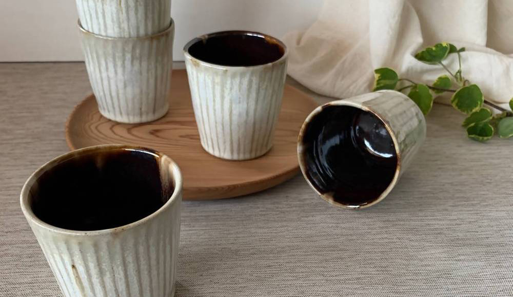
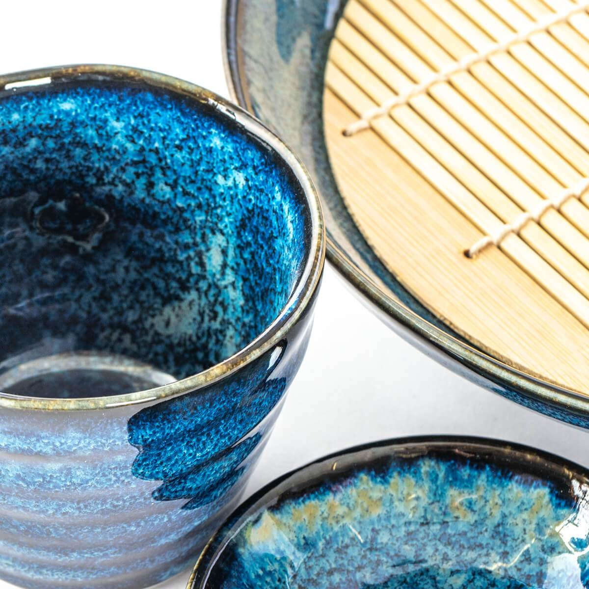

TODAY'S TOPIC
ステキな器を楽しむ•オンライン陶器市
今年も我慢のGWですね。みなさんはお家でいかがお過ごしの予定でしょうか。ちょっとした暇つぶしに、自分だけのお皿探しをしてみませんか？

img source -(https://toukiichi.mashiko.online/)
波佐見焼・有田焼・美濃焼、日本各地に素敵な焼き物文化が多くありますが、それらを通常の価格より安く購入できる場が「陶器市」です。以前は各地域で行われていましたが、去年からはオンラインでの開催に移行したようです。ページ下部のリンクサイトから、各地域の陶器市へ行くことができます。

img source -(https://toukiichi.mashiko.online/)
遠足や修学旅行の一環で、焼き物体験がありませんでしたか？私は3回くらいそんな体験があったのですが、その時はあまり興味を持てませんでした。作るのは楽しいけれど、出来上がったモノや、他の同様の商品にはあまり魅力を感じなくて。
ただ、最近は焼き物に興味を持つことが増えました。家でお皿は波佐見焼のものを使用しています。一点もの、っていうところに魅力を感じますし、少しレトロな風合いが可愛いんですよね。
私はこのGWのうちに、焼き物のスープマグをゲットしたいと思っています。みなさんもサイトをちらっと覗いてみてくださいね。